Ранкова прогулянка
ЩодняПів року, по квадрату на день
Fix Your Life будить тебе питанням, яке не можна відкласти, і допомагає триматися того, що ти вирішив: звички з твоїми фото, серії та весь рік у кольорі.
Безкоштовне завантаження · Один будильник і одна звичка безкоштовно, назавжди · Без реклами. Ніколи.
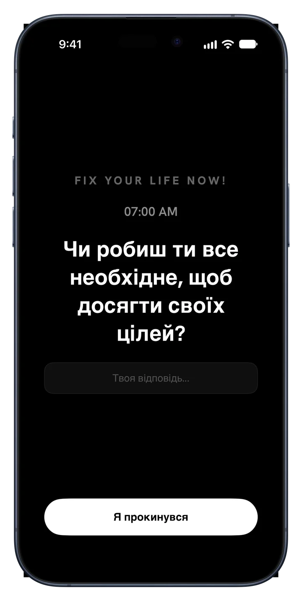
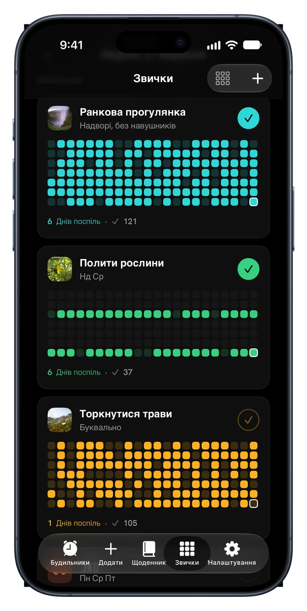
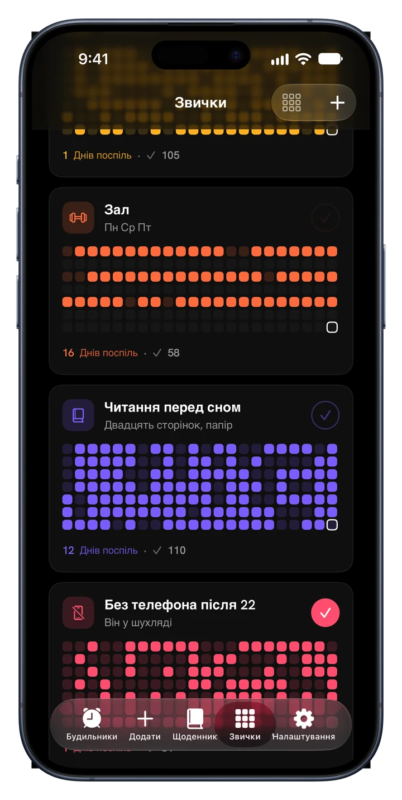
Нове · Звички
Додай те, чого справді хочеш дотримуватися. Дай кожній звичці обличчя, відмічай її і дивись, як серія росте у своєму кольорі.
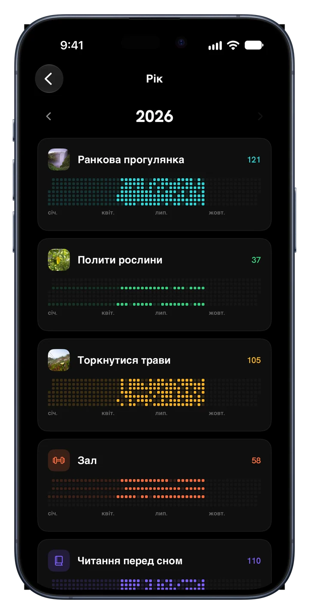
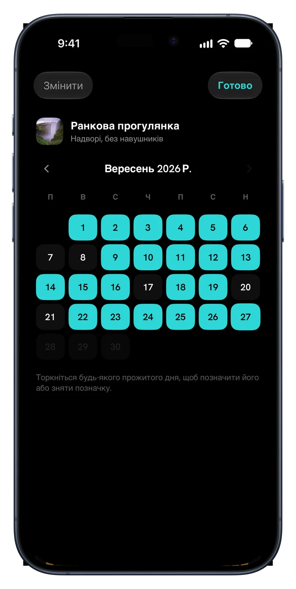
Пів року, по квадрату на день
Пів року, по квадрату на день
Пів року, по квадрату на день
Усередині застосунку
Кожен екран зроблений заради одного: розбудити тебе для власного життя.
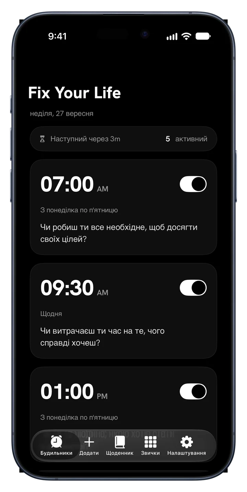
Будильники зі змістом
Став будильники на будь-який час і будь-який день. Кожен несе питання замість звуку, який вимикають і забувають. Відповідай одним рядком, і день почнеться чесно.
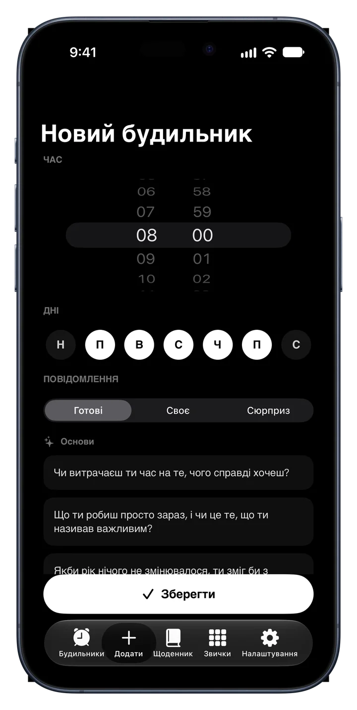
34 питання · 6 наборів
Основи, Амбіції, Час і Смертність, Ідентичність, Чесне Дзеркало та Живість. Це не афірмації. Це питання, яких ти уникав. Або напиши свої.
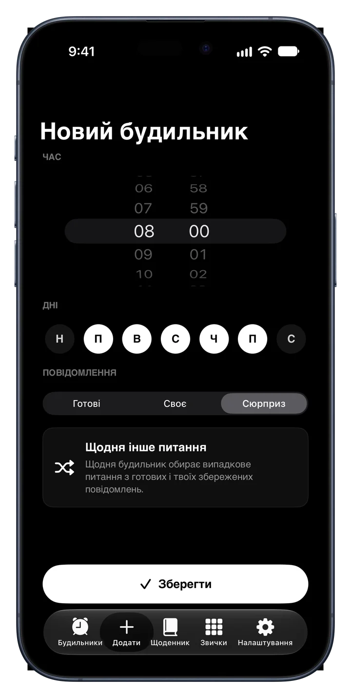
Режим «Сюрприз»
Повторення перетворюється на фоновий шум. Режим «Сюрприз» обирає нове питання для кожного дня тижня, і будильник не втрачає гостроти.
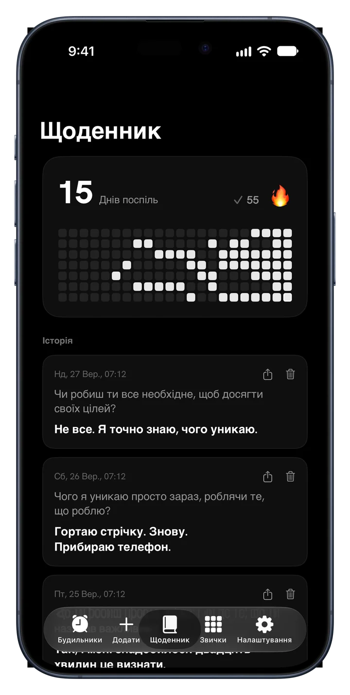
Щоденник, що питає першим
Кожна відповідь зберігається з питанням і датою. Серія, теплова карта й історія на місці, і сталість стає видимою.
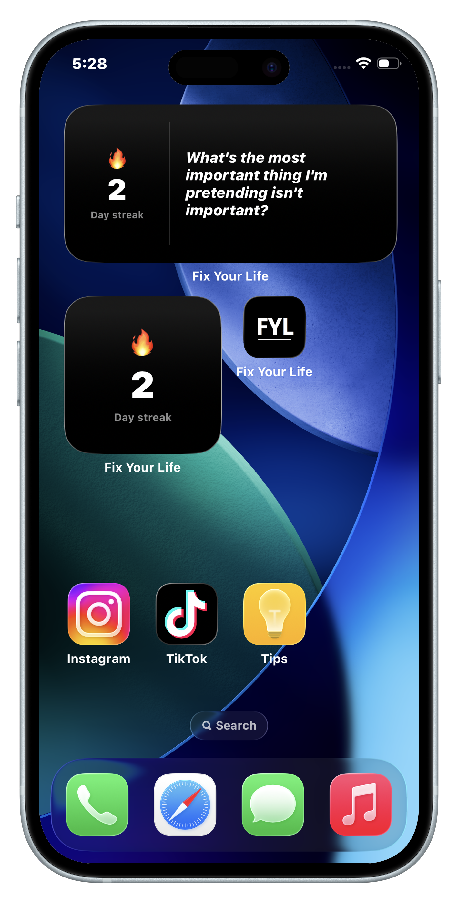
Віджети
Твоя серія й питання дня, щоб першим ти бачив те, чого уникав.
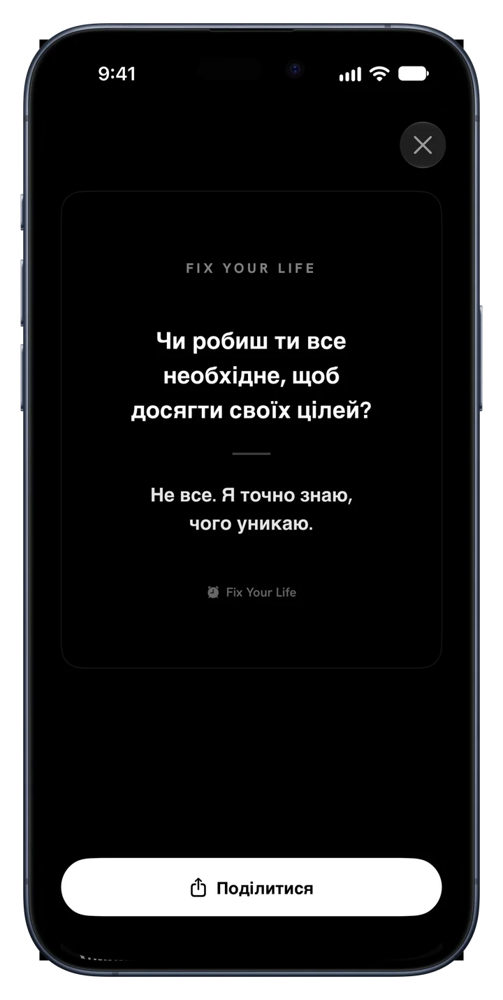
Ділися перемогами
Перетвори будь-яку відповідь на охайну картку й поділися будь-де. Твої відповіді — доказ, що ти був тут, і деякі заслуговують на денне світло.
Як це працює
План готовий ще до кінця першої хвилини.
Ранки, дисципліна, здоров'я, фокус, екранний час або сон. План будується довкола цього.
Обери час. Він дзвонить щодня з питанням під твій вибір.
Маленьку, щоденну й свою. Додай фото, обери колір, відмічай.
Кожен виконаний день запалює квадрат. Пропустиш один — це видно. Продовжуй, і рік заповниться кольором.
Ціни
Один будильник і одна звичка безкоштовні назавжди, з усіма функціями. Premium — щоб вести цілий день.
$0 назавжди
Без картки й пробного періоду
$17.99 / рік
3 дні безкоштовно · близько $0.35 на тиждень
$39.99 один раз
Один платіж, без підписки
Також є тижневий план за $4.99. Ціни в доларах США; App Store покаже ціну для твоєї країни. Безкоштовний період — для нових підписників річного плану.
Питання
«Якби хтось зняв останні дві години твого життя, чи вирішив би він, що ти хочеш того, чого кажеш, що хочеш?»
Одне питання вранці. Один квадрат на день. Так рік змінює колір.
Завантажте вApp StoreБезкоштовне завантаження · 45 мов · Без реклами. Ніколи.